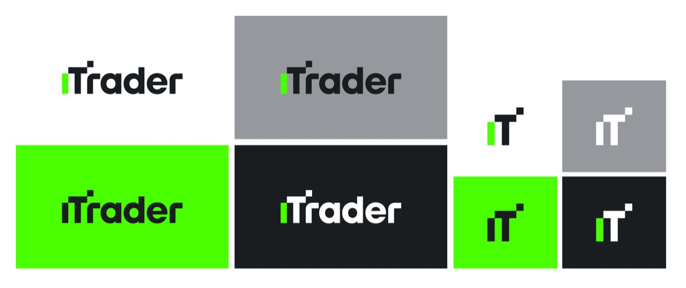
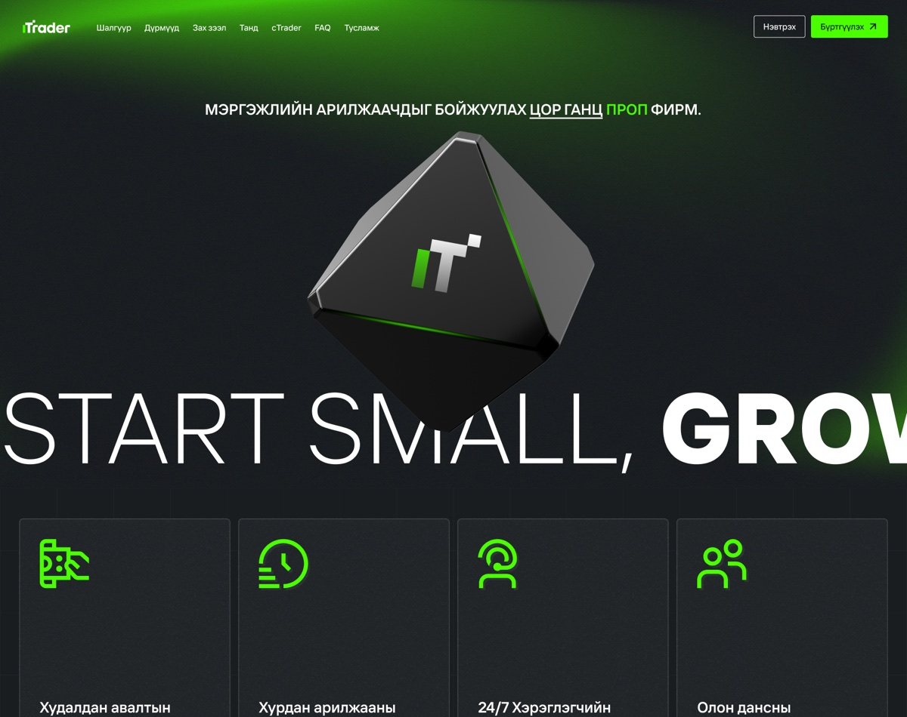
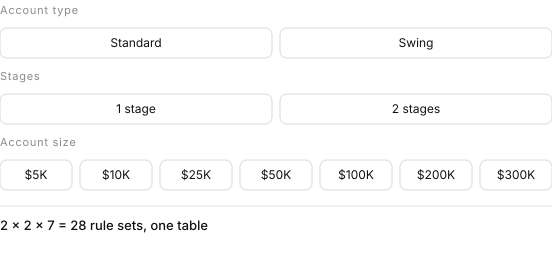
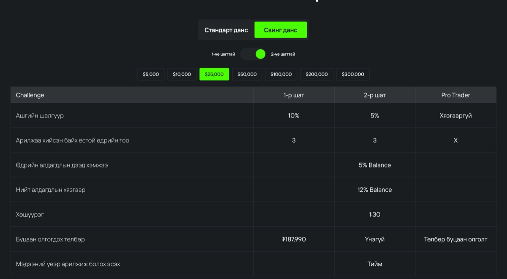
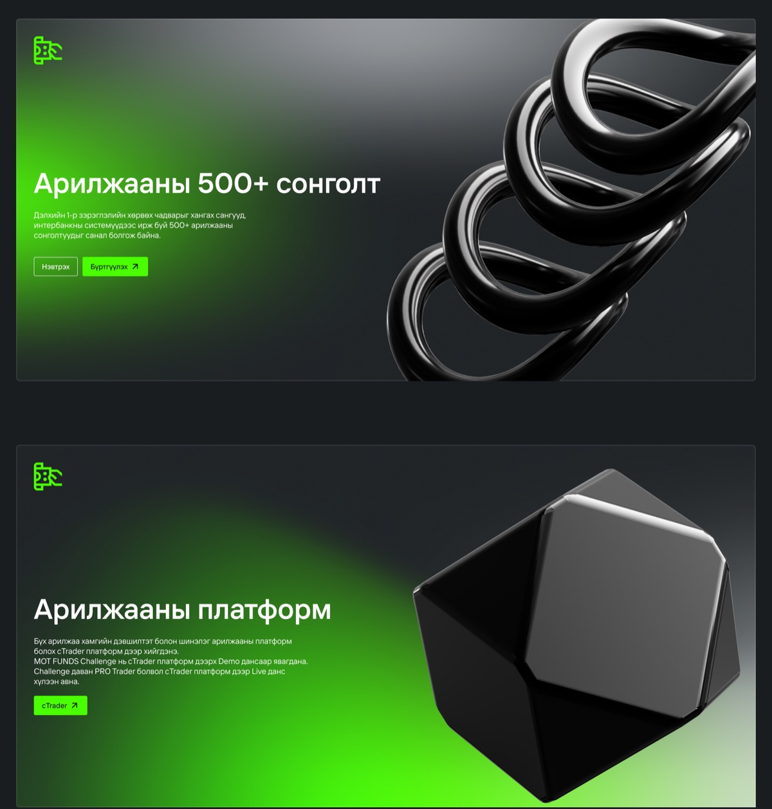
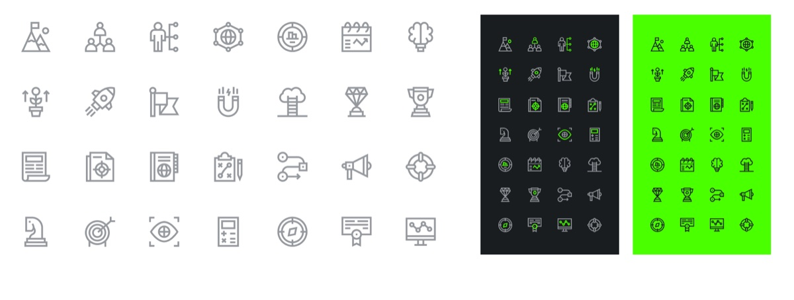

iTrader landing page design
2025
A proprietary trading firm sells a rulebook. Pay a fee, trade to a target without breaching a loss limit, and the firm funds you with its own capital. iTrader is Mongolia’s first, and my job on the landing page was to make those rules legible enough to be trusted.
What a prop firm sells
A proprietary trading firm takes no deposits and sells no signals. It sells an audition. You pay a fee, trade a demo account to a profit target, and if you reach it without breaking the loss limits, the firm hands you real capital and keeps a minority of what you make.
iTrader is the first of these in Mongolia, and I put that in the first line of the page: цор ганц проп фирм, the only prop firm. Under it I set the offer plainly: a funded account up to $600,000, a 90% profit share, a first payout after thirty days and another every seven after that.
In the footer I had to carry the disclosure the regulator requires: 84.01% of retail accounts lose money. The same page that sells an audition has to say that most people fail it.2
Every number on this page is also a condition under which the customer loses their fee. That is not a feature list. It is a contract, and it has to read like one.
That settled my tone before I made a single visual decision. No superlatives, no invented statistics, and every number in plain sight, because a trader who cannot find the drawdown limit will assume it is being hidden from them.
Start small, grow big
I held the brand to three colours and a grey. Near-black for surface, one green for anything that moves, white for type, and a mid grey for everything that is neither. I gave each a CMYK build as well as an RGB one, because a firm that sponsors things ends up in print.

In the wordmark I swapped the i for a green bar and set a small square above the T, so the logotype steps up to the right. It reads as a rising chart without drawing one, which I wanted in a category where most competitors’ marks are a literal candlestick.
Behind the four primaries I built a second palette of ten for charts, states and campaign work. One of them I named Orange MOT. МОТ Фанд is the company iTrader trades as, and I had built the parent brand the year before, so I gave its colour a defined slot in the system rather than letting it turn up unannounced.
Rules in two alphabets
The site is in Mongolian. The product vocabulary is not. A trader here reads Challenge, LIVE данс, Pro Trader, Leaderboard and cTrader in Latin and everything around them in Cyrillic, often inside one sentence.
I chose TT Interphases Pro because it carries both alphabets, in Light, Demibold and Black, and I made it the whole system instead of pairing a Latin face with a Cyrillic fallback. A fallback announces itself the moment a heading mixes alphabets, and on this site nearly every heading does.

I set the headline wider than the viewport so it bleeds off both edges. Cutting it means it gets read rather than scanned, and it leaves the Cyrillic line above room to be a sentence instead of competing for the same attention.
Twenty-eight rulebooks
I built the pricing section as three dials. Standard account or Swing. One stage or two. Seven account sizes from $5,000 to $300,000.


In the table underneath I made rows that do not change by stage span the full width instead of repeating. Max daily loss is 5% whether you are in stage one, stage two or funded, so I printed it once across all three columns, and did the same for leverage, total loss and news trading.
A value repeated three times tells you nothing. A value that spans three columns tells you the rule does not change.
Four of the seven rows span. I wanted a reader to take in the shape of the contract before reading a single number: most of it is fixed, and the part that moves is the part they are choosing between.
The three rows that differ
The second table is the sales argument. I set it against FTMO and TopTier Trader at the same $100,000 account.
| At $100,000 | iTrader | FTMO | TopTier |
|---|---|---|---|
| Account size | $100,000 | $100,000 | $100,000 |
| Time limit to pass | None | None | None |
| Profit target | 10% / 5% | 10% / 5% | 10% / 5% |
| Minimum trading days | 3 | 4 | 4 |
| Max daily loss | 5% | 5% | 5% |
| Max total loss | 12% | 10% | 10% |
| Refundable fee | $450 | $578 | $560 |
| Own trading platform | Yes | No | No |
Set here as data. Tinted cells are the ones where iTrader differs.
Five of the eight rows are identical, and I left them identical. The audience is traders, who read comparison tables for a living and have seen every trick played in one. A table where the local firm wins every row is the fastest way to be disbelieved.
So I let the argument rest on three cells. Three minimum trading days instead of four, which means the challenge can be finished inside a week. A 12% total loss limit instead of 10%, where the larger number is the better one, because it is how far the account may fall before it is closed. And a $450 fee against $578 and $560.
The fourth difference is the one a competitor cannot answer by changing a number. iTrader runs its own platform. Both of the others rent theirs.
Nothing to photograph
A prop firm has nothing to shoot. No hardware, no storefront, no shelf. The category answer is a stock photograph of somebody in front of six monitors, or a candlestick chart with a glow behind it, and I did not want either because everyone already has both.

So I built a family of rendered objects instead: black chrome on green light. An octahedron carries the monogram in the hero, a coil stands for the five hundred instruments, a faceted solid for the platform, a folded sheet for the profit split.
I kept them abstract on purpose. A chart illustration makes an implicit promise about returns. A piece of metal does not, and on a page that also has to disclose an 84% loss rate, that felt like the more defensible picture to put next to the headline.

I drew twenty-eight icons at one weight rather than licensing a set. An off-the-shelf set would have brought its own opinion about corners and stroke ends, and lost the argument with the objects standing next to it.
- МОТ Фанд ХХК, company register 8374694, Minister Tower, Sukhbaatar district, Ulaanbaatar. The challenge product is called MOT Funds in the body copy; iTrader is the brand it goes to market under.
- The firm’s own risk disclosure, in the page footer, alongside the markets it cannot serve: the United States, Brazil, Canada, Israel and Iran.